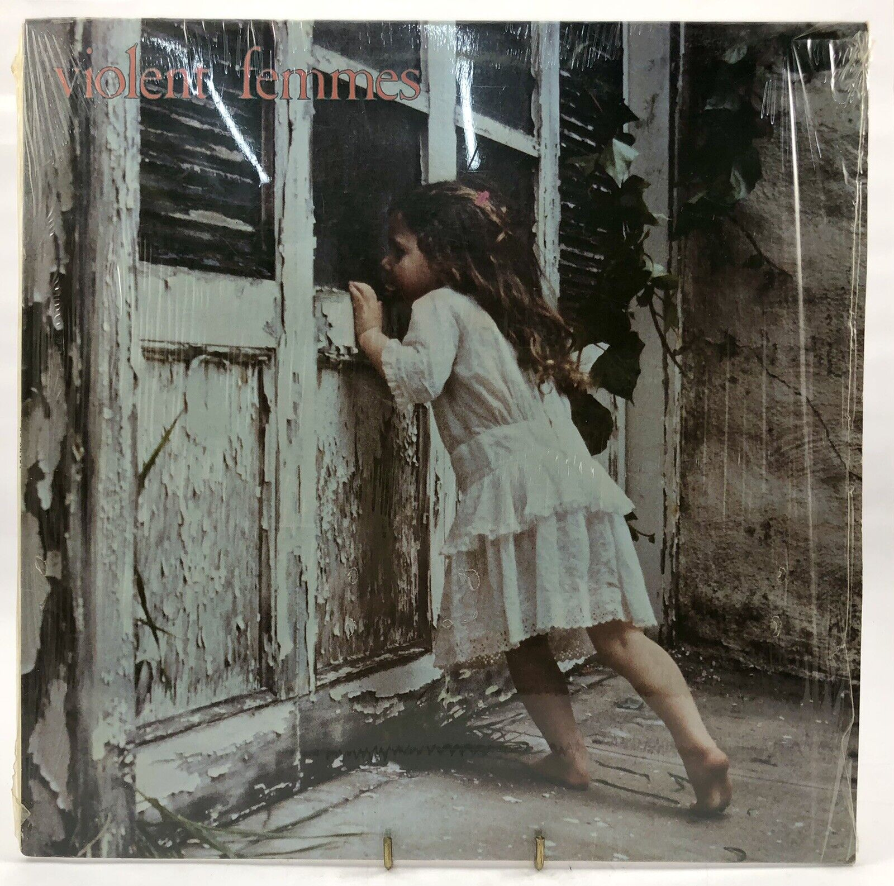

![]()
At least once a week I experience a particular kind of despair that is all too familiar to programmers. I am sitting alone with my laptop and my code, minding my own business, working quietly. Out of nothing a yawning pit of black despair opens at my feet, barbed tentacles wrap around my legs, poison injects chill into my veins, the icy claws of anxiety rip through my viscera, and a withered voice of pure evil slithers into my brain. The voice speaks to me in the disturbingly-seductive language of Mordor, and a terrible incantation consumes my thoughts:
why not write a regular expression?
I try to resist. I’m a good girl, I tell the Dark Lord. I would never. Not on a first date anyway. Well, buy a girl a drink first maybe? And… oh it’s so cold outside and, I mean, Sauron is kinda hot. Have you not watched Rings of Power? Sometimes a girl has needs.
Um. Anyway. What was I talking about? Oh, right. Regular expressions.
Warning
Let’s start this love affair with darkness with a disclaimer: I have never wanted to write a primer on working with regular expressions in R. I loathe regular expressions, and I am not good at them. About 99% of my knowledge of regular expressions comes from weeping in abject despair with a dozen R documentation tabs open and desperately clicking on random links at www.regular-expressions.info to work out why my regex doesn’t work.
I am, very clearly, not an expert.
So why am I, a grotesquely unqualified woman, writing this post anyway? Honestly, the answer is because this post is the tutorial that I need. I’m writing this as an act of solidarity with future Danielle, who will find inevitably herself crying at her keyboard trying to make a basic regex work, and will need a little kindness and support. With that in mind, and knowing exactly who will be revisiting this post in six months time in tears… you got this girl. I believe in you.
Let’s get started. In this post I’ll be working mostly with the stringr package, so I’ll load that at the beginning:
library(stringr)I’ll use a variety of sources for the text, mostly song lyrics. Each of those is stored in a text file so I’ll read the text now:
feather <- brio::read_lines("feather.txt")
femininomenon <- brio::read_lines("femininomenon.txt")
midnight <- brio::read_lines("midnight.txt")
babygotback <- brio::read_lines("babygotback.txt")Each of these is a vector of strings. To give you a sense of what they look like, here’s the first few lines in the opening to babygotback:
head(babygotback)[1] "[Intro: Girl]" [2] "Oh my God, Becky, look at her butt, it is so big, ugh" [3] "She looks like one of those rap guys' girlfriends, but, ugh, you know" [4] "Who understands those rap guys? Ugh, they only talk to her" [5] "Because she looks like a total prostitute, okay?" [6] "I mean, her butt, it's just so big"
We shall return to this classic text later, but the first few examples will all use femininomenon:
head(femininomenon)[1] "[Verse 1]" [2] "Same old story, time again" [3] "Got so close but then you lost it" [4] "Should've listened to your friends" [5] "'Bout his girlfriend back in Boston" [6] "You sent him pictures and playlists and phone sex"
Hopefully you get the idea. Each of these is a vector, each element is a string, and we’ll do some pattern matching on those strings, most often using str_view() from the stringr package to show which parts of the text each regex matches against. It’s not the best tool for using in a script, but it’s ideal as a way of visually inspecting the results of a regular expression matching exercise.
Simple matches
It begins with the very, very basics. Regular expressions are a tool for matching (and sometimes modifying) patterns in text strings. The simplest way to write a regular expression is to detect strings that match a specific, fixed subset of text. For instance, let’s say I want to find every line in Femininomenon in which Chappell Roan sings the word "femininomenon". Using str_view() this is what we get:
str_view(
string = femininomenon, # the song lyrics
pattern = "femininomenon" # the regular expression
)[24] │ (It's a fem) It's a <femininomenon> [28] │ (It's a fem) It's a <femininomenon> [53] │ (It's a fem) It's a <femininomenon> [57] │ (It's a fem) It's a <femininomenon> [65] │ Well, what we really need is a <femininomenon> [66] │ (A what?) A <femininomenon> [72] │ (It's a fem) It's a <femininomenon> [82] │ (It's a fem) It's a <femininomenon> [86] │ (It's a fem) It's a <femininomenon> [90] │ Make a bitch, it's a fem (It's a <femininomenon>)
In this output, the teal-highlighted text1 enclosed in angle brackets displays the sections of the text that match the regular expression. In this case our regular expression is very simple. It’s just a literal string "femininomenon", so the output highlights every instance of that word.
Notice also that not every line in the song is shown by str_view(). Only those lines that match the regular expression are included (you can see that in the numbers to the left of each match). However, we can change this behaviour using the match argument to str_view(). For example, if wanted to see only those lines that don’t include the letter e, we could do this:
str_view(
string = femininomenon,
pattern = "e",
match = FALSE
)[11] │ Why can't any man [12] │ [19] │ [20] │ [Chorus] [29] │ [40] │ Why can't any man [41] │ [48] │ [49] │ [Chorus] [58] │ [67] │ [77] │ [78] │ [Chorus] [87] │ [88] │ [Outro]
Alternatively, we could set match = NA. If we do this, str_view() will return every line in the song, whether it matches or not. Here’s an example. Let’s search for every instance of the word "you", and set match = NA:
str_view(
string = femininomenon,
pattern = "you",
match = NA
)[1] │ [Verse 1] [2] │ Same old story, time again [3] │ Got so close but then <you> lost it [4] │ Should've listened to <you>r friends [5] │ 'Bout his girlfriend back in Boston [6] │ You sent him pictures and playlists and phone sex [7] │ He disappeared from the second that <you> said [8] │ "Let's get coffee, let's meet up" [9] │ I'm so sick of online love [10] │ And I don't understand [11] │ Why can't any man [12] │ [13] │ [Pre-Chorus] [14] │ Hit it like, get it hot [15] │ Make a bitch, it's a fem [16] │ Hit it like, get it hot [17] │ Make a bitch, it's a— [18] │ Um, can <you> play a song with a fucking beat? [19] │ [20] │ [Chorus] ... and 72 more
This output illustrates two things. First, you can see that there’s a match on lines 3, 4, 7, 18, and probably others too (the remaining 72 lines of the song aren’t shown in the output but they are actually included in the str_view() output). Second, it shows that our regular expression isn’t quite doing the job we want it to: the match on line 4 matches the first three letters of the word “your”, and it doesn’t match to line 6 because that line contains the word “You” with an upper case “Y”. If we want a regular expression to match “you” and “You” but not match against “your”, it needs to be something a little more nuanced than setting pattern = "you" like I did above.
Quantifiers
For the moment, let’s set aside the thorny question of how to handle capitalisation, and focus instead on the “you” vs “your” issue. Moreover, let’s move the goalposts, and pretend that our new goal is actually to detect both "you" and "your". This post is not a place of honour, and I’m not above cheating when it comes to these matters.
We can solve our new problem with the help of quantifiers. In regular expression syntax, certain character (sometimes called “metacharacters”) have special meanings. For example, the ? character is used to indicate that the preceding character is optional. When we write "your?" as our regular expression, the r? part indicates that the r character is optional. It will match against both "you" and "your":
str_view(femininomenon, "your?")[3] │ Got so close but then <you> lost it [4] │ Should've listened to <your> friends [7] │ He disappeared from the second that <you> said [18] │ Um, can <you> play a song with a fucking beat? [33] │ Lying to <your> friends about [35] │ Stuck in the suburbs, <you>'re folding his laundry [36] │ Got what <you> wanted, so stop feeling sorry [47] │ Dude, can <you> play a song with a fucking beat? [60] │ Ladies, <you> know what I mean [61] │ And <you> know what <you> need [76] │ Did <you> hear me? Play the fucking beat
Here you can see that it matches the "you" on line 3 and the "your" on line 4. However, on line 35 where it encounters the word "you're" it detects a match, but only to the "you" part of the word.
There are several quantifiers supported by most regular expression flavours.2 Quantifiers always refer to the previous item, and specify the number of repetitions of the previous item that can be matched:
?matches the previous item zero or one time*matches the previous item zero or more times+matches the previous item one or more times{n}matches the previous item exactly n times{n,}matches the previous item n or more times{n,m}matches the previous item at least n times but not more than m times
This behaviour is (of course!) described in numerous places in the R documentation, but I find it helps a lot to have a concrete example that shows the differences between each of these. In the table below, the rows correspond to the strings "a", "ab", "abb", and so on. Each column corresponds to a a regular expression that is always "ab" with a quantifier applied to the letter "b". In each cell of the table, I’ve used str_view() to show how each string matches (or doesn’t match) against each of the regexes:
Code
tibble::tibble(
string = c("a", "ab", "abb", "abbb", "abbbb", "abbbbb"),
`ab?` = str_view(string, pattern = "ab?", match = NA),
`ab*` = str_view(string, pattern = "ab*", match = NA),
`ab+` = str_view(string, pattern = "ab+", match = NA),
`ab{2}` = str_view(string, pattern = "ab{2}", match = NA),
`ab{2,}` = str_view(string, pattern = "ab{2,}", match = NA),
`ab{2,4}` = str_view(string, pattern = "ab{2,4}", match = NA)
)# A tibble: 6 × 7
string `ab?` `ab*` `ab+` `ab{2}` `ab{2,}` `ab{2,4}`
<chr> <strngr_v> <strngr_v> <strngr_v> <strngr_v> <strngr_v> <strngr_v>
1 a <a> <a> a a a a
2 ab <ab> <ab> <ab> ab ab ab
3 abb <ab>b <abb> <abb> <abb> <abb> <abb>
4 abbb <ab>bb <abbb> <abbb> <abb>b <abbb> <abbb>
5 abbbb <ab>bbb <abbbb> <abbbb> <abb>bb <abbbb> <abbbb>
6 abbbbb <ab>bbbb <abbbbb> <abbbbb> <abb>bbb <abbbbb> <abbbb>b
Notice that these are all eager (sometimes called greedy), in the sense that they will always match to as many repetitions as they possibly can while satisfying the rules. However, you can reverse this behaviour and make a quantifier lazy by appending ? immediately after the quantifier. A lazy quantifier will match against the fewest number of repetitions as possible while still satisfying the rule. Here’s what that looks like:
Code
tibble::tibble(
string = c("a", "ab", "abb", "abbb", "abbbb", "abbbbb"),
`ab??` = str_view(string, pattern = "ab??", match = NA),
`ab*?` = str_view(string, pattern = "ab*?", match = NA),
`ab+?` = str_view(string, pattern = "ab+?", match = NA),
`ab{2}?` = str_view(string, pattern = "ab{2}?", match = NA),
`ab{2,}?` = str_view(string, pattern = "ab{2,}?", match = NA),
`ab{2,4}?` = str_view(string, pattern = "ab{2,4}?", match = NA)
)# A tibble: 6 × 7
string `ab??` `ab*?` `ab+?` `ab{2}?` `ab{2,}?` `ab{2,4}?`
<chr> <strngr_v> <strngr_v> <strngr_v> <strngr_v> <strngr_v> <strngr_v>
1 a <a> <a> a a a a
2 ab <a>b <a>b <ab> ab ab ab
3 abb <a>bb <a>bb <ab>b <abb> <abb> <abb>
4 abbb <a>bbb <a>bbb <ab>bb <abb>b <abb>b <abb>b
5 abbbb <a>bbbb <a>bbbb <ab>bbb <abb>bb <abb>bb <abb>bb
6 abbbbb <a>bbbbb <a>bbbbb <ab>bbbb <abb>bbb <abb>bbb <abb>bbb
Obviously, some of those are silly. There’s no point whatsoever in writing a regular expression like ab{2,4}?, because it produces exactly the same behaviour as ab{2}. Nevertheless, there are some instances where lazy quantifiers turn out to be useful, so I’m mentioning them here just in case I come back in tears next year trying to figure out how the accursed things work.
In everyday life I find that 95% of the time the only quantifiers I ever need are ?, *, and +, but every now and then I find a need to use the more flexible {} notation. To give one example of this, I’ll use a recent Midnight Pals thread, which I loaded earlier as the midnight vector. If you’re not a regular reader of Midnight Pals, it’s essentially a literary satire that makes oblique references to current events. Edgar Allen Poe, Stephen King, Clive Barker, and Mary Shelley are recurring characters, for instance. So too is JK Rowling, though she doesn’t associate with the other characters and instead tends to live in her own “mysterious circle of robed figures”. To give you a sense of what the dialog typically looks like, here’s the first few lines:
head(midnight)[1] "[mysterious circle of robed figures]" [2] "JK Rowling: hello children" [3] "Rowling: what newsss, wormtongue?" [4] "Rowling: how goes the infiltration of bluesssky?" [5] "Jesse Singal: mommy mommy" [6] "Singal: it was SO HARD"
As illustrated in this extract, one of the conceits of the JKR character is that she hisses many of her lines3 and so the text often contains words like "bluesssky" or "transssses". So let’s see if we can write a regular expression to detect the hissed words. The actual number of s-repetitions in the JKR dialog varies of course, so we might want to use a regular expression like s{3,} to find instances of three or more successive s characters:
str_view(midnight, "s{3,}")[3] │ Rowling: what new<sss>, wormtongue? [4] │ Rowling: how goes the infiltration of blue<sss>ky? [17] │ Rowling: door'<sss> open, boy<sss>! [20] │ Rowling: i know you did, je<ssss>e [22] │ Rowling: yess you did great je<sss>e [43] │ Rowling: patience, <ssss>isster, we must bide our time [54] │ Rowling: sure, je<sss>e might look like a sniveling worm, a nasty crawling slithering little shit, a spineless craven buffoon
It doesn’t work perfectly (e.g., it misses the "yess" on line 22), but it’s not too bad given how simple the regex is. That said, it’s also a bit limited insofar as it only detects the hissing (i.e., the s-repetition). Ideally, we’d like a regular expression that captures the entire hissssssed word, but to do that we’ll need to get a little fancier, and dive a little deeper into regular expression syntax. We’ll return to that later.

Backslashes (part I)
The discussion of quantifiers leads to the natural question: what if I don’t want to use ? as a quantifier, and instead want to match a literal ? in the string. To do that we can escape the special character by prefixing it with a backslash. That is, within a regular expression we would write \? to match a literal ?.
It gets complicated, though, because the way we represent the regular expression is via an R string,4 and \ has a special meaning in R strings, because it’s used as an escape character in R too. So if we want to “pass” a literal \ into the regular expression, the thing we need to type in R is "\\". This is… confusing. I find this helps:
- write
"\\+"in R to mean\+in the regex, and match a literal+ - write
"\\?"in R to mean\?in the regex, and match a literal? - write
"\\*"in R to mean\*in the regex, and match a literal* - write
"\\{"in R to mean\{in the regex, and match a literal{
Notice the notation I’ve used here: when I enclose a string in quotation marks I’m referring to the string as it has to be specified in R, but when the quote marks are missing I am referring to the raw contents of the string/regex.
In any case, since we are using \ as the escape character, it follows that it too is considered a special character in regular expression syntax. As such, you have to escape the backslash if you want to treat it as a literal:
- write
"\\\\"in R to mean\\in the regex, and match a literal\
Not particularly pleasant, and as you can imagine it is very easy to write regular expressions that use the wrong number of backslashes and end up in tears.
In any case, here’s an example. If I want to find all the question marks in the femininomenon lyrics, this is what I would have to do:
str_view(femininomenon, "\\?")[18] │ Um, can you play a song with a fucking beat<?> [47] │ Dude, can you play a song with a fucking beat<?> [63] │ But does it happen<?> (No) [64] │ But does it happen<?> (No) [66] │ (A what<?>) A femininomenon [76] │ Did you hear me<?> Play the fucking beat
It should also be noted that a similar thing happens with regards to special characters like \n (line feed) that contain a backslash in their notation. The line feed character has no special meaning in a regular expression, but because you need to pass the textual representation from the R string down to the regular expression, you have to escape the backslash. That is:
- write
"\\n"in R to mean\nin the regex, and match a line feed - write
"\\t"in R to mean\tin the regex, and match a tab
I’ll return to this in a later section, because there are other characters that need to be escaped. But these are the ones we need for now.
Character sets
Earlier in the post we encountered the irritating problem of capital letters. If we want to detect all lines where Chappell Roan sings "you" or "your" without worrying about capitalisation, we need a way of describing “a single character that can either be y or Y”. We can do this by defining a character set (sometimes referred to as a category or class) by enclosing the set of allowed characters in square brackets. For example, the character set [yY] will match to a single instance of y or a single instance of Y. Our regular expression now becomes "[Yy]our?", as shown below:
str_view(femininomenon, "[Yy]our?")[3] │ Got so close but then <you> lost it [4] │ Should've listened to <your> friends [6] │ <You> sent him pictures and playlists and phone sex [7] │ He disappeared from the second that <you> said [18] │ Um, can <you> play a song with a fucking beat? [32] │ <You> pretend to love his mother [33] │ Lying to <your> friends about [35] │ Stuck in the suburbs, <you>'re folding his laundry [36] │ Got what <you> wanted, so stop feeling sorry [47] │ Dude, can <you> play a song with a fucking beat? [60] │ Ladies, <you> know what I mean [61] │ And <you> know what <you> need [76] │ Did <you> hear me? Play the fucking beat
You can apply quantifiers to character sets, but you need to be a little careful about this. Let’s say I have the character set [femino], and I want to apply the quantifier {4,} to detect four or more repetitions of the character set. The regular expression [femino]{4,} will match against literal repetitions like "oooo" or "mmmmm", but it will also match to words like "omen" and "feminine" because every letter in those words belongs to the character set:
str_view(femininomenon, "[femino]{4,}")[8] │ "Let's get c<offee>, let's meet up" [24] │ (It's a fem) It's a <femininomenon> [28] │ (It's a fem) It's a <femininomenon> [53] │ (It's a fem) It's a <femininomenon> [57] │ (It's a fem) It's a <femininomenon> [65] │ Well, what we really need is a <femininomenon> [66] │ (A what?) A <femininomenon> [72] │ (It's a fem) It's a <femininomenon> [82] │ (It's a fem) It's a <femininomenon> [86] │ (It's a fem) It's a <femininomenon> [90] │ Make a bitch, it's a fem (It's a <femininomenon>)
… oh yeah, it also matches the "offee" in "coffee".
Ranges and shorthand notation
When referring to alphabetic characters or digits, you can use a hyphen within a character set to define a range of characters. For example, [0-9] is essentially a shorthand for [0123456789] and [a-e] is short hand for [abcde]. You can define multiple ranges within a single character set, so [a-zA-Z0-9] will match against alphanumeric characters.
Some character sets are used so often that there is a shorthand notation for them:
\ddenotes digits, and is equivalent to[0-9]\wdenotes word characters. At a minimum it supports alphanumeric characters, but it will also match against unicode characters used in words.\sdenotes whitespace characters, and will match a space" ", a tab"\t", a carriage return"\r", a line feed"\n", or a form feed"\f"; as well as unicode separator characters if the regex flavour supports unicode
There are a variety of other shorthand classes too. If you look in the base R documentation, for instance, you’ll find reference to various “POSIX classes” like :digit: and :punct: that do something similar. Over time I’ve become wary about these because they aren’t implemented consistently across regex flavours (see later), so I try to avoid them.
To illustrate how to use these pre-specified character sets, I’ll do a little bit of regular expression matching on the opening lines to One by Harry Nilsson, where I’ve used digits to represent the numbers rather than spelling out the words:
one <- c(
"1 is the loneliest number that you'll ever do",
"2 can be as bad as 1",
"It's the loneliest number since the number 1"
)To detect the digits in this text, the regular expression we need is just the character set \d itself. The only nuance here is that we have to specify the regex as an R string, so we have to type "\\d" in R in order to get what we want:
str_view(one, "\\d")[1] │ <1> is the loneliest number that you'll ever do [2] │ <2> can be as bad as <1> [3] │ It's the loneliest number since the number <1>
Alternatively, suppose I want to detect all words in the text. One approach (which doesn’t quite work – we’ll come back to this later) would be to look for consecutive sequences of word characters, which we could specify using \w+ as the regular expression and, to belabour the point, writing "\\w+" as the R string that specifies that regular expression:
str_view(one, "\\w+")[1] │ <1> <is> <the> <loneliest> <number> <that> <you>'<ll> <ever> <do> [2] │ <2> <can> <be> <as> <bad> <as> <1> [3] │ <It>'<s> <the> <loneliest> <number> <since> <the> <number> <1>
You can see why this doesn’t quite do what we want: the apostrophe is not a word character, and it doesn’t get detected. There’s a better approach to this using word boundaries, but I’ll come to that later when talking about anchors.
Logical operations with character sets
To some extent you can perform logical operations on character sets: set negation, set union, set intersection, add set subtraction. These operations are all supported by regular expressions, but this is another thing where the implementation varies a little across regular expression flavours. So let’s talk about these in turn.
Of the various operations, set union is the easiest one to describe. We’ve already talked about it. If you want to take the union of two character sets, all you have to do is concatenate them in the description. The lower case letters are represented by the range [a-z], and the upper case letters are represented by [A-Z]. The union of these classes is simply [a-zA-Z]. These are set operations, so it doesn’t matter if you include the same element multiple times: [aab] is the same character set as [ab].
The second easiest one to talk about is negation. If you want to represent “any character except the ones listed”, use [^ to begin the set rather than [. For example, the set [^femino ] is comprised of all characters except those seven (six letters plus the space). If I wanted to detect all instances where the Chappell Roan lyrics contain five or more consecutive characters that don’t include these letters, I’d do this:
str_view(femininomenon, "[^femino ]{5,}")[4] │ Sho<uld'v>e listened to your friends [6] │ You sent him pictures and <playl>ists and phone sex [24] │ <(It's> a fem) It's a femininomenon [28] │ <(It's> a fem) It's a femininomenon [35] │ <Stuck> in the <suburbs,> you're folding his laundry [53] │ <(It's> a fem) It's a femininomenon [57] │ <(It's> a fem) It's a femininomenon [66] │ (A <what?)> A femininomenon [72] │ <(It's> a fem) It's a femininomenon [82] │ <(It's> a fem) It's a femininomenon [86] │ <(It's> a fem) It's a femininomenon [88] │ <[Outr>o] [90] │ Make a bitch, it's a fem <(It's> a femininomenon)
Yeah, fair enough.
Before moving on to other kinds of set logic, it’s worth being explicit about what the [^ notation implies about including ^ in a character set. The short answer is that ^ only has the special meaning of “negation operator” if it follows immediately after the [. In other words, the sets [ab^] and [a^b] are identical and will match against any literal a, b, or ^ that appears in the text. However, [^ab] is a different set entirely, because in this context ^ is interpreted as the negation operator and this will match against anything that is not an a or a b. As an illustration, let’s match against five or more repetitions of [femino ^], and compare it to what we got last time:
str_view(femininomenon, "[femino ^]{5,}")[8] │ "Let's get c<offee>, let's meet up" [9] │ I'm so sick< of on>line love [23] │ (Make a bitch) Make a bitch g<o on >and on [24] │ (It's a fem) It's a< femininomenon> [27] │ (Make a bitch) Make a bitch g<o on >and on [28] │ (It's a fem) It's a< femininomenon> [38] │ I'm so sick< of on>line love [52] │ (Make a bitch) Make a bitch g<o on >and on [53] │ (It's a fem) It's a< femininomenon> [56] │ (Make a bitch) Make a bitch g<o on >and on [57] │ (It's a fem) It's a< femininomenon> [65] │ Well, what we really need is a< femininomenon> [66] │ (A what?) A< femininomenon> [71] │ (Make a bitch) Make a bitch g<o on >and on [72] │ (It's a fem) It's a< femininomenon> [75] │ (Make a bitch) Make a bitch g<o on >and on [81] │ (Make a bitch) Make a bitch g<o on >and on [82] │ (It's a fem) It's a< femininomenon> [85] │ (Make a bitch) Make a bitch g<o on >and on [86] │ (It's a fem) It's a< femininomenon> ... and 1 more
Not surprisingly, this is a very different result.
Finally, I want to briefly talk about subtraction and intersection. This is where things get tricky in R because these do work in tidyverse regular expressions but do not work in base R regexes, due to the differences in the regular expression engines underneath. In some regex flavours (including the one used in tidyverse), you can use a minus sign - to denote set difference, so it would be entirely valid to use [[a-z]-[aeiou]] to represent lower case consonants. Similarly, you can use && to represent intersection, so [[a-z]]&&[Papa] would be equivalent to [pa]. This notation works in tidyverse (more detail on this later), as illustrated below:
str_view(femininomenon, "[[a-z]-[femino]]{5,}")[6] │ You sent him pictures and <playl>ists and phone sex [35] │ Stuck in the <suburbs>, you're folding his laundry
str_view(femininomenon, "[[a-z]&&[Papa]]{3,}")[7] │ He dis<app>eared from the second that you said [22] │ (Get it hot) Get it hot like P<apa> John [26] │ (Get it hot) Get it hot like P<apa> John [51] │ (Get it hot) Get it hot like P<apa> John [55] │ (Get it hot) Get it hot like P<apa> John [63] │ But does it h<app>en? (No) [64] │ But does it h<app>en? (No) [70] │ (Get it hot) Get it hot like P<apa> John [74] │ (Get it hot) Get it hot like P<apa> John [80] │ (Get it hot) Get it hot like P<apa> John [84] │ (Get it hot) Get it hot like P<apa> John
Be warned, however: it does not work in base R.
Anchors and boundaries
Next on Danielle’s list of “tedious regular expression concepts” are anchors. There are two special characters that are used to represent “start of string” and “end of string”:
- When used outside of a character set,
^denotes “start of string” - When used outside of a character set,
$denotes “end of string”
In my little notes-to-self I always phrase it like this because when you use these characters inside square brackets they are not interpreted as anchors, and sometimes I forget this nuance.
As an example of how to use these anchors, let’s say I want to detect the first word in every line in “Femininomenon”, but only if that word starts with the capital letter L. The regular expression ^L will match against any L that appears as the first character in the string, so a first-pass attempt at solving this problem might be to try something like ^L\w* (i.e., match a starting L followed by zero or more word characters). It’s not the most robust way to solve the problem, but it works just fine in this case:
str_view(femininomenon, "^L\\w*")[33] │ <Lying> to your friends about [60] │ <Ladies>, you know what I mean
The same logic works for end of string. In the example below we have a regular expression that detects the final word in the line, but only if it starts with a lower-case f:
str_view(femininomenon, "f\\w*$")[4] │ Should've listened to your <friends> [15] │ Make a bitch, it's a <fem> [24] │ (It's a fem) It's a <femininomenon> [28] │ (It's a fem) It's a <femininomenon> [44] │ Make a bitch, it's a <fem> [53] │ (It's a fem) It's a <femininomenon> [57] │ (It's a fem) It's a <femininomenon> [65] │ Well, what we really need is a <femininomenon> [66] │ (A what?) A <femininomenon> [72] │ (It's a fem) It's a <femininomenon> [82] │ (It's a fem) It's a <femininomenon> [86] │ (It's a fem) It's a <femininomenon> [92] │ Make a bitch, it's a fem, fem, fem, <fem>
About 99% of my use of anchors is either $ or ^ but there are other anchors. It varies across regex flavours, but generally you can use \A the same way you use ^ to represent start of string, and \Z to represent end of string. Personally I don’t like these alternatives, because I keep incorrectly thinking that they have some meaningful relationship to alphabetic characters. The ^ and $ notation is pretty arbitrary, but at least it’s not actively misleading in the way that \A and \Z are.
A closely related concept to anchors is the idea of a boundary. Anchors and boundaries are both examples of “zero-length matches”, in the sense that they don’t match against a specific character, they match against a position in the text. A word boundary \b (the only kind of boundary I am aware of, though there might be others) matches against a position that is followed by a word character (i.e., anything that is matched by \w), but is preceded by a non-word character or vice versa. Informally stated, \b matches a start-of-word boundary and an end-of-word boundary.
As a simple example, suppose we want to match only those instances in “Femininomenon” where "fem" is used as a word. If we don’t consider word boundaries, this doesn’t quite work because it matches the first three characters in "femininomenon":
str_view(femininomenon, "fem")[15] │ Make a bitch, it's a <fem> [24] │ (It's a <fem>) It's a <fem>ininomenon [28] │ (It's a <fem>) It's a <fem>ininomenon [44] │ Make a bitch, it's a <fem> [53] │ (It's a <fem>) It's a <fem>ininomenon [57] │ (It's a <fem>) It's a <fem>ininomenon [65] │ Well, what we really need is a <fem>ininomenon [66] │ (A what?) A <fem>ininomenon [72] │ (It's a <fem>) It's a <fem>ininomenon [82] │ (It's a <fem>) It's a <fem>ininomenon [86] │ (It's a <fem>) It's a <fem>ininomenon [90] │ Make a bitch, it's a <fem> (It's a <fem>ininomenon) [92] │ Make a bitch, it's a <fem>, <fem>, <fem>, <fem>
We can tighten our regex by specifying that "fem" must have word boundaries on either side. The regular expression now becomes \bfem\b, so the command we type in R looks like this:
str_view(femininomenon, "\\bfem\\b")[15] │ Make a bitch, it's a <fem> [24] │ (It's a <fem>) It's a femininomenon [28] │ (It's a <fem>) It's a femininomenon [44] │ Make a bitch, it's a <fem> [53] │ (It's a <fem>) It's a femininomenon [57] │ (It's a <fem>) It's a femininomenon [72] │ (It's a <fem>) It's a femininomenon [82] │ (It's a <fem>) It's a femininomenon [86] │ (It's a <fem>) It's a femininomenon [90] │ Make a bitch, it's a <fem> (It's a femininomenon) [92] │ Make a bitch, it's a <fem>, <fem>, <fem>, <fem>
Much better! Notice also that “end of string” and “start of string” do count as a word boundaries. On lines 15, 44, and 92, the line ends in the word "fem" and our regular expression captures these cases.

Groups
The next regular expression concept to talk about are groups. At it’s most basic, a group is a sequence of characters that is treated as if it were a single character for the purposes of quantification etc.5 We can do this by enclosing the characters in parentheses, e.g., (fem) is a group that corresponds to the specific sequence fem. For example, let’s suppose I want to match against "fem" or "femininomenon". There are lots of ways I could do this, but one of my favourite approaches to this would be to define (ininomenon) as a group, and then declare that this group is optional using the ? quantifier:
str_view(femininomenon, "fem(ininomenon)?")[15] │ Make a bitch, it's a <fem> [24] │ (It's a <fem>) It's a <femininomenon> [28] │ (It's a <fem>) It's a <femininomenon> [44] │ Make a bitch, it's a <fem> [53] │ (It's a <fem>) It's a <femininomenon> [57] │ (It's a <fem>) It's a <femininomenon> [65] │ Well, what we really need is a <femininomenon> [66] │ (A what?) A <femininomenon> [72] │ (It's a <fem>) It's a <femininomenon> [82] │ (It's a <fem>) It's a <femininomenon> [86] │ (It's a <fem>) It's a <femininomenon> [90] │ Make a bitch, it's a <fem> (It's a <femininomenon>) [92] │ Make a bitch, it's a <fem>, <fem>, <fem>, <fem>
This can be handy if a particular sequence that you want to match might be repeated as a whole. Let’s say I want to match "in", "inin", and "ininin" but not match "inn". We could do this cleanly with a regular expression like (in)+, though if we want to prevent it from matching the "in" in "inn" we should also specify that the pattern should be preceded and followed by word boundaries. That is, this almost works:
str_view("i in inin ininin inn out", "(in)+")[1] │ i <in> <inin> <ininin> <in>n out
This actually works:
str_view("i in inin ininin inn out", "\\b(in)+\\b")[1] │ i <in> <inin> <ininin> inn out
Pipes as “or” operators
One of the more basic features in regular expressions is that when | is used outside of a category, it is interpreted as an “or” operator that is evaluated left to right. It’s so basic that I feel weird about delaying discussion of | until this late in the post, but in practice I find that I use it most often in conjunction with groups and character sets, so I wanted to wait until I’d talked about those concepts first.
This time I’ll use the lyrics to Feather by Sabrina Carpenter as the source text, and I’ll look for all instances where she sings the word “feather” or the phrase “no duh”. No, I don’t know why I chose those two, but let’s run with it. A regular expression that does this, taking potential capitalisation into account, would be ([Ff]eather)|([Nn]o duh):
str_view(feather, "([Ff]eather)|([Nn]o duh)")[19] │ I feel so much lighter like a <feather> with you off my mind (Ah) [23] │ I feel so much lighter like a <feather> with you out my life [29] │ Like a <feather>, like a <feather>, like a <feather>, yeah [44] │ I feel so much lighter like a <feather> with you off my mind (Ah) [48] │ I feel so much lighter like a <feather> with you out my life [55] │ Like a <feather>, like a <feather>, like a <feather> [59] │ You miss me? <No duh> [62] │ You miss me? <No duh> (<No duh>) [67] │ (I feel so much lighter like a <feather> with you off my mind) [68] │ You miss me? <No duh> [70] │ (Like a <feather>, like a <feather>, like a <feather>) [72] │ (I feel so much lighter like a <feather> with you off my mind) [73] │ You miss me? <No duh> [75] │ (Like a <feather>, like a <feather>, like a <feather>, yeah)
In this example, there’s no possible way in which a string can match against both the left hand side and the right hand side, so in this case the order of the two groups doesn’t matter. But that’s not always the case. Let’s suppose I want to match against the exact word “feather”, or match against a substring inside a word that starts with the letter f and ends in the letter t (we can do this with (f\w*t) as the regex). Should we match the entire word "feather" or only match the "feat" part of the word? It depends on the order in which the two groups are specified.
To see the difference compare this:
str_view(feather, "(feather)|(f\\w*t)")[15] │ I got you blocked, a<ft>er this, an a<fterthought> [19] │ I feel so much lighter like a <feather> with you off my mind (Ah) [22] │ You <fit> every stereotype, "Send a pic" [23] │ I feel so much lighter like a <feather> with you out my life [29] │ Like a <feather>, like a <feather>, like a <feather>, yeah [44] │ I feel so much lighter like a <feather> with you off my mind (Ah) [47] │ You <fit> every stereotype, "Send a pic" [48] │ I feel so much lighter like a <feather> with you out my life [55] │ Like a <feather>, like a <feather>, like a <feather> [67] │ (I feel so much lighter like a <feather> with you off my mind) [70] │ (Like a <feather>, like a <feather>, like a <feather>) [72] │ (I feel so much lighter like a <feather> with you off my mind) [75] │ (Like a <feather>, like a <feather>, like a <feather>, yeah)
to this:
str_view(feather, "(f\\w*t)|(feather)")[15] │ I got you blocked, a<ft>er this, an a<fterthought> [19] │ I feel so much lighter like a <feat>her with you off my mind (Ah) [22] │ You <fit> every stereotype, "Send a pic" [23] │ I feel so much lighter like a <feat>her with you out my life [29] │ Like a <feat>her, like a <feat>her, like a <feat>her, yeah [44] │ I feel so much lighter like a <feat>her with you off my mind (Ah) [47] │ You <fit> every stereotype, "Send a pic" [48] │ I feel so much lighter like a <feat>her with you out my life [55] │ Like a <feat>her, like a <feat>her, like a <feat>her [67] │ (I feel so much lighter like a <feat>her with you off my mind) [70] │ (Like a <feat>her, like a <feat>her, like a <feat>her) [72] │ (I feel so much lighter like a <feat>her with you off my mind) [75] │ (Like a <feat>her, like a <feat>her, like a <feat>her, yeah)
As this illustrates, if a match is detected on the left hand side of the | the regular expression engine uses that match. It won’t use the right hand side if there’s already a match on the left. Admittedly, I’ve been a bit lazy in this by not taking word boundaries or capitalisation into account. You’d probably want something a little more elaborate in real life, but it’s such a silly example that I’ve erred on the side of simplicity here so that you can see the difference that order makes.
Dots as “any” character
It may surprise the reader (it surprised the author) that I’ve managed to get this far into the post without ever talking about the . metacharacter. This is partly accidental, partly deliberate. The . is a powerful and easily-misused tool: it matches any character except line breaks. There’s a whole article on the dot that cautious novice regex users to be careful when using it… so I am trying to teach myself to be careful and not use it so often!
An example of why it’s sometimes counterintuitive. Suppose I want to match the text in each line of “Feather” up to the point that "ignore" appears, and then terminate the match. It’s very tempting to use .*ignore as the regular expression, but that doesn’t quite do what we expect:
str_view(feather, ".*ignore")[13] │ <I slam the door, I hit ignore> [38] │ <I slam the door (Slam the door), I hit ignore (Hit ignore>)
Because the * operator is greedy, it “consumes” every instance of "ignore" except the last one, which is then matched by the explicitly stated "ignore" in the regex. As a consequence, the regex I’ve written here matches all the text up to and including the last "ignore" that appears in the line, so it matches incorrectly on line 38.
We can fix this by tightening the quantification. Instead of using a greedy operator * that matches as much text as possible, we can use the lazy version *? that matches as little as possible:
str_view(feather, ".*?ignore")[13] │ <I slam the door, I hit ignore> [38] │ <I slam the door (Slam the door), I hit ignore>< (Hit ignore>)
Now we get the right answer.
.* in my regex.* matchesIntermission: Very important applied regex
This post is getting long. We need a little break. Well, I need a little break. As it happens, we’ve now introduced enough regular expression concepts that we can detect all the hissed words in the “Midnight Pals” dialog hissed by the JK Rowling character. Here they are:
str_view(midnight, "\\b((\\w|')*s{3,}(\\w|')*)|(yess)\\b") [3] │ Rowling: what <newsss>, wormtongue? [4] │ Rowling: how goes the infiltration of <bluesssky>? [17] │ Rowling: <door'sss> open, <boysss>! [20] │ Rowling: i know you did, <jesssse> [22] │ Rowling: <yess> you did great <jessse> [43] │ Rowling: patience, <ssssisster>, we must bide our time [54] │ Rowling: sure, <jessse> might look like a sniveling worm, a nasty crawling slithering little shit, a spineless craven buffoon
For a variety of reasons this makes me happy. But let’s move on, shall we?
Backreferences
At this point we’re starting to get into the weeds. I’ve talked about most of the core features of regular expressions, and to be honest I’d guess that 95% of my regex usage can be accounted for using only the tools described so far. But there are many more fancy tricks you can do with regexes, and the one I use most often is backreferencing.
Here’s an example. Suppose we are listening to classical music, and we decide we want to detect every instance of a word in Baby Got Back that begins and ends with the letter a. We can do this using the tools we already know. The regular expression a\w+a will match against strings of characters start and end with a, so we can extend that to require a word starts and end with a by placing a word boundary on either side, giving us \ba\w+a\b as the regular expression:
str_view(babygotback, "\\ba\\w+a\\b")[85] │ My <anaconda> don't want none
But now suppose that we want to relax this slightly and find all words that start and end with the same (case-matched) letter, regardless of what that letter actually is. For that to work, we need to have the ability to capture one part of the regular expression, and then refer back to the captured contents elsewhere in the regular expression. The capturing part is straightforward, actually. Earlier when I introduced the () notation for groups, I was a little imprecise in my language. By default, anything enclosed in parentheses is treated as a capture group, and you can refer back to them numerically: \1 is a backreference to the first capture group, \2 refers to the second one, and so one.6
To give a simple example, imagine a markup language in which footnotes are specified using markers like %a%, %b% and so on, and the marker would need to appear on either side of the footnote text itself. Some example strings that you might see:
comments <- c(
"some text %a%footnote%a% some text",
"%a% none of this %b% is a footnote",
"some more text %b%another footnote%b%"
)Now consider the regular expression %[a-z]%. This will match against %a%, %b% and so on. Let’s have a look at what it detects:
str_view(comments, "%[a-z]%")[1] │ some text <%a%>footnote<%a%> some text [2] │ <%a%> none of this <%b%> is a footnote [3] │ some more text <%b%>another footnote<%b%>
Next we need to specify this as a capture group, which we do by wrapping it in parentheses. That gives us (%[a-z]%) as our regular expression. Because the content of this group is captured, I can insert a \1 to refer to the specific text matched by that group. So we could build a regular expression like (%[a-z]%).*+\1, which looks for a footnote marker like %a% or %b%, followed by some arbitrary text, and then followed by a matching footnote marker:
str_view(comments, "(%[a-z]%).*\\1")[1] │ some text <%a%footnote%a%> some text [3] │ some more text <%b%another footnote%b%>
It’s a little bit risky to use the .* (as I discussed earlier), but it works for this particular problem, and hopefully you get the basic idea.
Armed with this newfound knowledge, we can return to the Baby Got Backreferences problem. Earlier on I used the expression \ba\w+a\b to detect words that start and end with the letter a. To generalise this to “words that start and end with the same letter”, I can replace the first a in this expression with a capture group that will match against any word character (i.e., (\w)), and then replace the second a with a backreference \1 to that captured group. In other words, we started out with \ba\w+a\b, and we modify it to \b(\w)\w+\1\b. When specified as an R string, we need to add the extra backslashes as usual, and that gives us this:
str_view(babygotback, "\\b(\\w)\\w+\\1\\b")[15] │ Wanna pull up tough 'cause you notice <that> butt was stuffed [21] │ But <that> butt you got makes (Me-me so horny) [24] │ Well, use me, use me 'cause you ain't <that> average groupie [28] │ Take the average black man and ask him <that> [33] │ Shake <that> healthy butt, baby got back [43] │ And when I'm throwin' a <gig> [51] │ So find <that> juicy double [53] │ Beggin' for a piece of <that> bubble [58] │ A word to the thick soul <sisters>, I wanna get with ya [63] │ A lot of <simps> won't like this song [65] │ And I'd <rather> stay and play [78] │ Cosmo ain't got <nothin>' to do with my selection [85] │ My <anaconda> don't want none [88] │ But please don't lose <that> butt [89] │ Some brothers wanna play <that> hard role [90] │ And tell you <that> the butt ain't gold [93] │ So Cosmo <says> you're fat [94] │ Well I ain't down with <that> [108] │ And <kick> them nasty thoughts
Victory! Those nasty thoughts have indeed been kicked.
Lookahead/lookbehind
Continuing with the all-important task of matching patterns in the immortal words of Sir Mix-a-Lot, it’s time to talk about lookahead and lookbehind. Suppose I want to find words that begin and end with the letter "a", but I don’t actually want to include the letter a at the end. In other words, I need to “look ahead” to check if the d in anaconda is followed by an a\b (i.e., a at the end of the word), but not include the a\b in the match. We can do this by creating a special “lookahead group” that encloses the a\b. However, instead of writing (a\b) like we would for a capturing group, we use (?= at the start to indicate that it’s a lookahead group. In other words, a lookahead group that detects (but does not match) the a at the end of anaconda is (?=a\b), and the full regex is \ba\w+(?=a\b). Here’s what that looks like when we put it into practice:
str_view(babygotback, "\\ba\\w+(?=a\\b)")[85] │ My <anacond>a don't want none
By analogy to lookahead groups, regular expressions also support lookbehind groups. They’re exactly the same concept as a lookahead group, but this time we’re looking at the text preceding the match rather than the text following it. The syntax for a lookbehind group is very similar, but we open the group with (?<= to specify that it’s lookbehind not lookahead. So, for instance, if we want to detect but not match the first a in anaconda, we use (?=a\b) to do so. The full regex to exclude both terminal a characters is therefore (?<=\ba)\w+(?=a\b) and we end up with this:
str_view(babygotback, "(?<=\\ba)\\w+(?=a\\b)")[85] │ My a<nacond>a don't want none
A slightly more realistic example would be to detect all the text inside a parenthetical, but not including the parentheses themselves. We can do this with a completely unintelligible regex like (?<=\()[^)]+(?=\)). It’s a crime against humanity, but it works:
str_view(babygotback, "(?<=\\()[^)]+(?=\\))")[21] │ But that butt you got makes (<Me-me so horny>) [30] │ So, fellas (<Yeah>), Fellas (<Yeah>) [31] │ Has your girlfriend got the butt? (<Hell yeah>) [32] │ Tell 'em to shake it (<Shake it>) Shake it (<Shake it>) [36] │ (<L.A. face with a Oakland booty>) [38] │ (<L.A. face with a Oakland booty>) [39] │ (<L.A. face with a Oakland booty>) [60] │ But I gotta be straight when I say I wanna— (<Uh>) [68] │ So, ladies (<Yeah>), Ladies (<Yeah>) [69] │ If you wanna roll in my Mercedes (<Yeah>)
Awesome.
Oh… by the way? This trick works in tidyverse, but it won’t work in base R unless you set perl = TRUE, because the default regular expression engine in base R doesn’t support lookahead and lookbehind groups.7 Which seems like a good time to discuss…
Three regex flavours
A persistent headache I have when writing regular expressions, besides the fact that they suck, is that there are so many slight variations on the same idea. At regular-expressions.info, for instance, you can find quick lookup tables for a wide variety of different regular expression engines. It lists regular expressions in R as one of those systems, but it’s important to remember that this refers to the syntax used by base R tools like grep(), gsub(), gregexpr() and so on. Or, more precisely, it refers to the default POSIX standard for extended regular expressions (ERE). Base R actually supports two different engines, so if you set perl = TRUE when calling base R functions then you would need to look at the rules for PCRE (perl compatible regular expressions). In tidyverse, regular expressions are usually handled with the stringr package that is built on top of stringi, which in turn uses the ICU engine that conforms to Unicode standards and as such provides comprehensive Unicode support. The stringi regular expressions page has a nice discussion.
Like an idiot, I forget this on a semi-regular basis, and I try to debug something by looking up the wrong regex syntax and yes, this sometimes matters. For example, when I discussed pre-specified character classes like digits (\d) and word characters (\w), or character ranges like [0-9] and [a-z], I made a deliberate decision not to discuss the predefined POSIX classes. These include things like [[:alpha:]] that matches alphabetic characters, and [[:digit:]] matches numeric digits. The digit and alphabetic character classes are fairly unproblematic, but there’s also a [[:punct:]] class that is intended to match punctuation characters. I find myself very tempted to use this class because, honestly, who wants to be bothered listing all the punctuation characters by hand? However, it’s a very bad idea to do this because not only do the results depend on system locale (which is to be expected for anything that involves text), there is absolutely no consistency at all in how this class is implemented in different regex engines.
To illustrate this I’ll use an example that I have shamelessly stolen directly from the stringi documentation. But first, because I cannot even with the base R regular expression syntax,8 I’ll define a base_extract_all() function that is roughly analogous to stringr::str_extract_all(), but uses the base R functions to do the work:
base_extract_all <- function(string, pattern, perl = FALSE) {
matches <- gregexpr(pattern = pattern, text = string, perl = perl)
regmatches(x = string, m = matches)
}Next I’ll define a string punct, which contains an assortment of different characters that one might be inclined to call “punctuation”:
punct <- ",./|\\><?;:'\"[]{}-=_+()*&^%$€#@!`~×‒„”"So, what happens when we match punct to "[[:punct:]]"? Well, it depends heavily on which engine you’re using. If you’re using ERE (i.e., base R with perl = FALSE), you get this as the result:
punct |>
base_extract_all("[[:punct:]]") |>
unlist() |>
cat(), . / | \ > < ? ; : ' " [ ] { } - = _ + ( ) * & ^ % $ € # @ ! ` ~ × ‒ „ ”
What about PCRE? Let’s set perl = TRUE and have a look:
punct |>
base_extract_all("[[:punct:]]", perl = TRUE) |>
unlist() |>
cat(), . / | \ > < ? ; : ' " [ ] { } - = _ + ( ) * & ^ % $ # @ ! ` ~
Okay yeah that is not even close to being the same thing. But what about the ICU engine? If you’re working in tidyverse, internally you’re probably relying on this engine and, well…
punct |>
str_extract_all("[[:punct:]]") |>
unlist() |>
cat(), . / \ ? ; : ' " [ ] { } - _ ( ) * & % # @ ! ‒ „ ”
Le sigh. Of course. Totally different again.
Little discrepancies like this are the reason why at various different points in the text, I’ve had to pause and mention things that work differently across the three regex engines used in R. While the differences between the engines are not large, it only takes one tiny difference to mess up an otherwise perfectly crafted regex. Something that looks like it works when you use stringr::str_detect() will suddenly break when you use the same regex in grep().
It is annoying.
Backslashes (part II)
We are getting very close to the end of the post (I promise!), but before I wrap up I want to return to the vexed topic of using the backslash to escape special characters. I talked about this at the beginning of the post, yes, but at that stage we hadn’t dived very deep into regular expressions. Since then we’ve covered a lot more territory, and in the process we’ve encountered more special characters and more syntax. With that in mind, I’ll revisit that subject now and provide a more comprehensive discussion. Additionally, because – as I’ve hinted – the rules inside a character set are different to the rules that apply outside a character set, I’ll handle those two cases separately.
Special characters outside a character set
Outside of a character set, the characters +, ., ?, *, and must all be escaped because otherwise they will be interpreted as quantifiers:
- write
"\\+"in R to mean\+in the regex, and match a literal+ - write
"\\?"in R to mean\?in the regex, and match a literal? - write
"\\*"in R to mean\*in the regex, and match a literal*
It obviously follows that since \ is used as the escape character it too must be escaped if you want to treat it as a literal. Moreover, since we’ve used | to represent the “or” operator and . to represent the “any” character, you will not be at all surprised to learn that these also must be escaped if you want to represent them as literal characters:
- write
"\\\\"in R to mean\\in the regex, and match a literal\ - write
"\\|"in R to mean\|in the regex, and match a literal| - write
"\\."in R to mean\.in the regex, and match a literal.
To help make this concrete, here’s a minimal example:
str_view(string = "+ . ? * \\ |", pattern = "\\+")
str_view(string = "+ . ? * \\ |", pattern = "\\*")
str_view(string = "+ . ? * \\ |", pattern = "\\?")
str_view(string = "+ . ? * \\ |", pattern = "\\\\")
str_view(string = "+ . ? * \\ |", pattern = "\\|")
str_view(string = "+ . ? * \\ |", pattern = "\\.")[1] │ <+> . ? * \ | [1] │ + . ? <*> \ | [1] │ + . <?> * \ | [1] │ + . ? * <\> | [1] │ + . ? * \ <|> [1] │ + <.> ? * \ |
The same logic applies to special characters like \n (line feed) and \t (tab), as well as regular expressions like \b (boundary), \w (word character), and \s (whitespace). This also applies to \u, if we wish to specify a unicode character in the regex. For these characters we need to escape the \ in R, in order to match the corresponding literal in the regex:
- write
"\\n"in R to mean\nin the regex, and match a line feed - write
"\\t"in R to mean\tin the regex, and match a tab - write
"\\u2300"in R to mean\u2300in the regex, and match a literal⌀ - write
"\\b"in R to mean\bin the regex, and match a word boundary - write
"\\w"in R to mean\win the regex, and match a word character - write
"\\s"in R to mean\sin the regex, and match a whitespace character
It also applies for the anchor characters ^ and $:
- write
"\\^"in R to mean\^in the regex, and match a literal^ - write
"\\$"in R to mean\$in the regex, and match a literal$
On top of this, we have several other characters that need to be escaped within the regex, because brackets, braces, and parentheses have syntactic meaning. However, the rules here are subtle. For the opening brace/bracket/parenthesis, you always have to escape:
- write
"\\["in R to mean\[in the regex and match a literal[ - write
"\\("in R to mean\(in the regex and match a literal( - write
"\\{"in R to mean\{in the regex and match a literal{
But for closing, the story is different. Specifically, you don’t have to escape the closing bracket ]:
- write
"]"in R to mean]in the regex and match a literal] - write
"\\)"in R to mean\)in the regex and match a literal) - write
"\\}"in R to mean\}in the regex and match a literal}
To make this a little clearer, this is how you do it for the opening bracket/parenthesis/brace:
str_view(string = "[blah] (blah) {blah}", pattern = "\\[")
str_view(string = "[blah] (blah) {blah}", pattern = "\\(")
str_view(string = "[blah] (blah) {blah}", pattern = "\\{")[1] │ <[>blah] (blah) {blah} [1] │ [blah] <(>blah) {blah} [1] │ [blah] (blah) <{>blah}
This is how you do it for the closing ones:
str_view(string = "[blah] (blah) {blah}", pattern = "]")
str_view(string = "[blah] (blah) {blah}", pattern = "\\)")
str_view(string = "[blah] (blah) {blah}", pattern = "\\}")[1] │ [blah<]> (blah) {blah} [1] │ [blah] (blah<)> {blah} [1] │ [blah] (blah) {blah<}>
Special characters inside a character set
Inside a character set (i.e., within a square bracketed expression), the rules are different and inconsistent across regex flavours. For tidyverse (ICU engine) and base R with perl = TRUE (PCRE engine), there are four special characters you need to worry about: ], ^, \, and -. Everything else can be added to a character set without needing any form of escaping. Here’s an example where the character set is comprised of various characters that would normally need to be escaped, but don’t need to be escaped inside a character set:
chars <- c(
"+", ".", "?", "*", "\\", "|",
"(", ")", "[", "]", "{", "}",
"^", "$", "-"
)
str_view(chars, "[a+.?*$|(){}]")[1] │ <+> [2] │ <.> [3] │ <?> [4] │ <*> [6] │ <|> [7] │ <(> [8] │ <)> [11] │ <{> [12] │ <}> [14] │ <$>
Here’s an example where each of the other four special characters are escaped. For the sake of my sanity I’ll include spaces in the character set. This allows me to write it like this, [ \] \^ \\ \- ], and when specified as an R string it looks like this:
str_view(chars, "[ \\] \\\\ \\^ \\- ]")[5] │ <\> [10] │ <]> [13] │ <^> [15] │ <->
In addition to this, there are a few other handy tricks you can use to make the character set simpler:
- if an unescaped
]appears as the first element of the character set, it is a literal - if an unescaped
^appears in anything other than the first element, it is also a literal - if an unescaped
-appears as the first or last element, it is a literal:
So this actually works for detecting right brackets, carets, and hyphens:
str_view(chars, "[]^-]")[10] │ <]> [13] │ <^> [15] │ <->
In all these examples I’m using str_view(), so we’re using the “tidyverse style” regular expressions here based on the ICU engine. If we switch over to base R and set perl = TRUE (and hence use the PCRE engine), the results would be the same. However, the rules for the POSIX ERE engine are slightly different. If you’re using base R with the default perl = FALSE setting, the only character that you can escape within a character set is the backslash itself, so if you want to match ], ^, or - then you have to rely on the positional tricks shown above. Here’s how you’d do it using the ERE engine:
cat(grep("[]^\\\\-]", chars, value = TRUE))\ ] ^ -
God this is exhausting.
Substitution
There’s one last topic to talk about: substitution. Throughout the post I’ve focused almost entirely on detecting patterns in text. In base R you might use grep() to accomplish this task, whereas in stringr you’d probably use str_detect().9 The other main thing I use regular expressions for is making substitutions, in which the matched text is replaced by something new. In base R you’d probably use gsub() for this, whereas in stringr you’d most likely use str_replace() or str_replace_all().
In most cases where I’ve had to use it substitution doesn’t introduce any new concepts: the “replacement” text is usually a fixed string that is inserted wherever a match is found. For example, if I want to replace the word "cat" with the emoji "🐈", I would do something like this:
cat(str_replace_all(
string = "if you concatenate two cats you get a catcat",
pattern = "\\bcats?\\b",
replacement = "🐈"
))if you concatenate two 🐈 you get a catcat
Okay yes, in this example I had to do a little bit of work in the pattern argument to come up with the regex that I wanted to use to define matches, but the replacement argument is very simple. Nothing new here really.
However, there are some fancy things that you can do with replacement text. In particular, all three regular expression engines used in R support backreferences within the replacement text. Here it is in all three engines:
a_vile_lie <- "dogs are better than cats"
# tidyverse + ICU
cat(str_replace_all(
string = a_vile_lie,
pattern = "(dogs)(.*)(cats)",
replacement = "\\3\\2\\1"
), sep = "\n")
# base R + ERE
cat(gsub(
pattern = "(dogs)(.*)(cats)",
replacement = "\\3\\2\\1",
x = a_vile_lie
), sep = "\n")
# base R + PCRE
cat(gsub(
pattern = "(dogs)(.*)(cats)",
replacement = "\\3\\2\\1",
x = a_vile_lie,
perl = TRUE
), sep = "\n")cats are better than dogs cats are better than dogs cats are better than dogs
As an aside, this last example is very closely related to the problem I was trying to solve when I finally broke down and decided to write the post. The thing I actually wanted to do was manipulate text inside parentheses using backreferences in the replacement string, without matching the parentheses themselves. To solve that you need to use backreferences, but you also need to use lookahead and lookbehind functionality:
# tidyverse + ICU
cat(str_replace_all(
string = "ab(cd)efg[hi]j",
pattern = "(?<=[\\[(])(\\w+)(?=[)\\]])",
replacement = "\\1,\\1"
), sep = "\n")
# base R + PCRE
cat(gsub(
pattern = "(?<=[\\[(])(\\w+)(?=[)\\]])",
replacement = "\\1,\\1",
x = "ab(cd)efg[hi]j",
perl = TRUE
), sep = "\n")ab(cd,cd)efg[hi,hi]j ab(cd,cd)efg[hi,hi]j
It would be trickier to do this with the ERE engine because it doesn’t support lookahead/lookbehind behaviour, but somehow I was convinced it could be done. I ended up reading far too much and… well, this is where we ended up.
I’m so sorry for my loss
rules <- tibble::tribble(
~pattern, ~replacement,
"([Dd]o)(-[Dd]o)+", "🎶", # do-do, do-do-do -> musical note
"feather", "🪶", # feather -> emoji feather
"wine", "🍷", # wine -> emoji wine
"(?<=\\()[Aa]h(?=\\))", "😌", # (ah) -> emoji relief
"\\[([^\\[\\]]+)\\]", "🎙️" # replace square bracketed text
)
str_rewrite <- function(string, rules) {
purrr::reduce2(
.x = rules$pattern,
.y = rules$replacement,
.f = str_replace_all,
.init = string
)
}
feather |>
str_rewrite(rules) |>
cat(sep = "\n")🎙️ (🎶, 🎶, 🎶, 🎶) (🎶, 🎶, 🎶, 🎶) Oh, not another take 🎙️ Oh, it's like that, I'm your dream come true When it's on a platter for you Then you pull back when I try to make plans More than two hours in advance, mm 🎙️ I slam the door, I hit ignore I'm saying, "No, no, no, no more" I got you blocked, after this, an afterthought I finally cut you off 🎙️ I feel so much lighter like a 🪶 with you off my mind (😌) Floatin' through the memories like whatever, you're a waste of time (😌) Your signals are mixed, you act like a bitch You fit every stereotype, "Send a pic" I feel so much lighter like a 🪶 with you out my life With you out my life 🎙️ (🎶, 🎶, 🎶, 🎶) (🎶, 🎶, 🎶, 🎶) Like a 🪶, like a 🪶, like a 🪶, yeah 🎙️ It feels so good Not carin' where you are tonight And it feels so good Not pretendin' to like the 🍷 you like 🎙️ I slam the door (Slam the door), I hit ignore (Hit ignore) I'm saying, "No, no, no, no more" I got you blocked, excited to never talk, I I'm so sorry for your loss 🎙️ I feel so much lighter like a 🪶 with you off my mind (😌) Floatin' through the memories like whatever, you're a waste of time (😌) Your signals are mixed, you act like a bitch (A bitch) You fit every stereotype, "Send a pic" I feel so much lighter like a 🪶 with you out my life With you out my life 🎙️ (🎶, 🎶, 🎶, 🎶) Ah, mm (🎶, 🎶, 🎶, 🎶) Like a 🪶, like a 🪶, like a 🪶 🎙️ You want me? I'm done You miss me? No duh Where I'm at, I'm up where I'm at You want me? I'm done (I'm done) You miss me? No duh (No duh) Where I'm at, I'm up (I'm up) where I'm at 🎙️ You want me? I'm done (I feel so much lighter like a 🪶 with you off my mind) You miss me? No duh Where I'm at, I'm up where I'm at (Like a 🪶, like a 🪶, like a 🪶) You want me? I'm done (I feel so much lighter like a 🪶 with you off my mind) You miss me? No duh Where I'm at, I'm up where I'm at (Like a 🪶, like a 🪶, like a 🪶, yeah)
Footnotes
At the R console, this highlighting appears automatically. Normally you wouldn’t see this highlighting in a quarto document like this one, because quarto strips out the ANSI control characters that the console uses to add colour to the output. However, for the purposes of this post I cheated a little, by writing a knitr hook that crudely mimics the same behaviour in this document.↩︎
There are a ghastly number of different regular expression flavours out there. They are very similar to each other, but have subtle differences. Somewhat frustratingly, there are three different regular expression flavours that are widely used in R (two in base R and one in tidyverse), and every now and then I find myself running into cases where they don’t produce identical results. More on this later in the post.↩︎
I usually imagine the character has a yuan-ti thing going on↩︎
I’m not talking about raw strings in this post. Sorry.↩︎
Yes I know it’s more nuanced than that, hush, I’ll get to that momentarily.↩︎
There’s also a mechanism for naming groups and name-based referencing, but I never use it.↩︎
That’s another one of those fun things where there are in fact three separate flavours of regex in widespread usage in R. ICU (used by stringi and stringr) and PCRE (base R with
perl = TRUE) both support lookahead and lookbehind assertions, as well as negative lookahead(?!blah)and negative lookbehind(?<!blah), but the ERE engine (base R withperl = FALSE) does not.↩︎I mean, wtf. I am genuinely sympathetic to R core, and deeply appreciate their willingness to maintain backward compatibility even for the bits of R that are just bizarre. But oh my god.↩︎
I know I know. I’ve mostly used
str_view()rather thanstr_detect()because it’s convenient for visually illustrating the regex match. But you wouldn’t work with this in a script↩︎
Reuse
Citation
@online{navarro2024,
author = {Navarro, Danielle},
title = {Baby Got Backreferences},
date = {2024-12-16},
url = {https://blog.djnavarro.net/posts/2024-12-16_regex-backreferences/},
langid = {en}
}